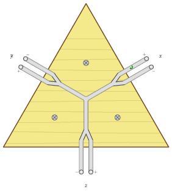
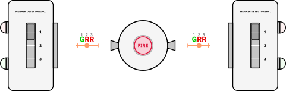

The Machine Stops
Read The Machine Stops by E. M. Forster. I hadn't previously associated him with science fiction, so it was a surpise that he wrote this book. However, the book focusses on human connections and alienation and thus perhaps isn't dissimilar thematically from his other works. The book imagines a future where we live our lives through machines, including communication and experiences. I found the Machine's preference for $n$-th hand information intriguing: first-hand and second-hand sources were considered partisan and unreliable. The society thus prefers depersonalised, smooth, generic lectures and historical accounts. Any of this sound familiar?
Mechanical analogy for qubit measurement
I have designed (but not yet built) a toy to illustrate measurements of a qubit state on \(x\)-, \(y\)- and \(z\)- axes. You place a ball into this system of pipes. To perform a measurement on an axis, you tilt the board. Under gravity, it rolls along the pipe, hits a fork and with approximately equal probability goes left or right, along another pipe and into a small trap.

When you make a repeat measurement, by resetting the board to the level position and tipping it the same way, you get the same outcome, as the ball is trapped.
When you perform a new measurement on a different axis, the ball is elevated above level, escapes the trap, rolls to the center, rolls down the next axis, and again goes randomly into one of two traps after hitting a fork.
This shows several features of a qubit system: there are two possible outcomes for any given axis; a measurement is performed in a chosen basis; changing the basis and performing a new measurement does not preserve the previous state. E.g., performing a \(y\)-measurement after an \(x\)-one destroys whatever \(x\)-state it was in. Repeat measurements, though, give the same outputs. These are features of projective measurements that disturb the state and are repeatable.
You can see the board as a classical hidden-variable-style analogy for measurement outcomes on a qubit state. The outcomes appear probabilistic to us because of our ignorance of microscopic details of smoothness of the pipes, the speed of the ball, the exact way we tip the board etc. If we knew them all, though, we could in principle apply classical mechanics and figure it out. If this were used in a classroom demonstration, it could be used to contrast classical ignorance and genuine quantum behaviour.
It does not show, and cannot show, interference, entanglement or superposition, however. Why not? The ball goes through a single path, a single fork. There's just no way for a ball to classically go through a superposition of two routes. Thus, this kind of mechanical model cannot be extended to cover multi-qubit correlations, as shown by Bell-type inequalities.
Tags: quantum-mechanics
Is QBism Bayesian?
I've been exploring QBism, an interpretation of Quantum Mechanics (QM) based on or inspired by Bayesian inference. The appeal being that mysteries about the ontic or epistemic nature of the wavefunction and about the collapse of the wavefunction could be resolved in this perspective.
I found it confusing and incoherent. There is nothing mathematically Bayesian about it. We don't describe beliefs with probability theory alone, as we use a wavefunction, and we don't update them using Bayes' theorem alone, as we need the Born rule. It is, though, Bayesian in spirit, in that the wavefunction is interpreted personally and epistemically: it isn't real or ontic, it something that we create in our heads to describe a quantum state. The collapse of a wavefunction isn't real either, it's just an update we do in our heads, analogous to Bayesian updating from prior to posterior. In later works this is explicitly stated and the B is said to stand for Bruno de Finetti rather than Bayes, as much like de Finetti said that probabilities didn't exist, QBism says wavefunctions don't exist in a physical, ontic way.
Sounds wonderful at first glance, until you ask a few more questions. Why are we using wavefunctions to describe our epistemic state (cf. probabilities)? Why do we use the Born rule to associate probabilities with outcomes? If the wavefunction is epistemic, what is it that we are ignorant about? If the measurement and update are all in our heads, what determines which random outcome we observe?
I found the answers to these questions vague and handwavy, as they involve 'agents', 'agent experiences', and 'normative rules'.
Tags: quantum-mechanics, bayes
Neuromancer
Read Neuromancer by William Gibson (1984). A seminal, genre-defining work of cyberpunk fiction. High-tech; low-life. The book is extraordinarily fast-paced and frantic, with rapid scene switches, character aliases, and twists, and no explanatory text on the technologies or lexicon. This makes it a challenging read.

Whilst I didn't especially enjoy it as a novel, I recognized it as a masterpiece of science fiction, introducing the cyberpunk vision of the future that felt so eerily like our present. There is no sign of global governance, order, or rules; only mega-corporations that control big tech. Humans are somewhat redundant: the hyper-wealthy aristocratic Tessier-Ashpool family are cryogenically frozen, awakening only periodically to check that AIs are running their finances appropriately. On his hero's journey, our protagonist, Case, saves no one, averts no disasters, and is manipulated by AIs. I did see Case as our hero, though. He survives the ruthless criminal underworld of Chiba and chooses to take a step closer to the truth and personal meaning.
Cyperpunk 2026
Tell me we are not living in a world predicted by cyperpunk.
The book [Neuromancer] established the filthy setting of an environmentally damaged, alienated, dystopian society dominated by global computer networks in which characters battle “artificial intelligences, monopoly capitalism and a world culture as ethnically eclectic as it is politically apathetic and alienated,” in the words of Webster’s New World Dictionary of Computer Terms.
From Encyclopedia Britannica entry on Neuromancer by William Gibson.
Tags: sci-fi
Quantum Mechanics In Your Face For Anybody
Wrote a lecture on Quantum Mechanics for a non-mathematical audience [pdf]. There are no equations and little maths beyond percentages. The key conceptual differences between Quantum and Classical Physics are there, though, and these topics require attention and serious thought.

The title alludes to two wonderful expositions of quantum mechanics by the masters:
-
Bringing Home the Atomic World: Quantum Mysteries for Anybody
N. D. Mermin
Am. J. Phys. 49, 940–943 (1981)
DOI: 10.1119/1.12594 -
Sidney Coleman’s Dirac Lecture “Quantum Mechanics in Your Face”
Sidney Coleman
e-Print: arXiv:2011.12671 [physics.hist-ph]
YouTube: Sidney Coleman, Quantum Mechanics in Your Face (1994)
Mermin and Coleman are both physicists' physicists: they aren't widely known to the public, but they contributed tremendous insight and clarity. Feynman described Mermin's paper as "one of the most beautiful papers in physics."
If everything goes to plan, I'll deliver the lecture at least three times this autumn to a general audience, and perhaps use the material when I deliver the PHY301 Quantum Mechanics module, as well, which, if you're interested, follows Griffiths.
Comments, discussion and feedback are welcome, but in the original, small net way. Shoot me an e-mail. I'll be happy to hear from you, dear reader.
Tags: quantum-mechanics, physics
England versus Argentina
Thoroughly excited about the England-Argentina World Cup semi-final, which kicks off in just a few hours. What an occasion! heavily loaded with both football and political history.

I was disappointed to hear Falklands/Malvinas mentioned by both sets of fans in a jingoistic manner. We are rivals on the pitch, but all football fans should be united in agreement that we must solve these problems through dialogue and never again resort to armed conflict.
Tags: football, world-cup, conflict
Three lions and red lines
Watched England's inspiring victory against Mexico at the Azteca. What a special match and occasion, one of the most memorable and iconic England games of my life.
Pickford, Bellingham and Kane were particularly inspirational. When the going gets tough, lots of England players over the years have disappeared. They are scared. They don't want the ball. Those three were brave and stepped up and took responsibility.

Immensely disappointed by the decision to suspend Balogun's three-match ban. A terrible precedent that undermines sporting integrity, fairness and transparency. FIFA are not true to their values, and they gaslight fans and behave as though they are beyond reproach. A red line indeed, and I suspect the beginning of a long and lasting open confrontation between UEFA and FIFA.
Whilst this is the most shocking evidence of corruption and collusion between FIFA and global-powers impacting the game, it is only a matter of someone missing a game. We should be just as outraged over FIFA failure to uphold worker and minority rights and safety.